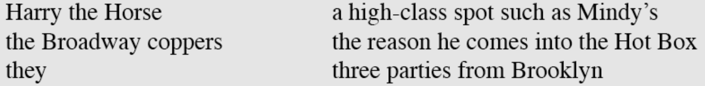
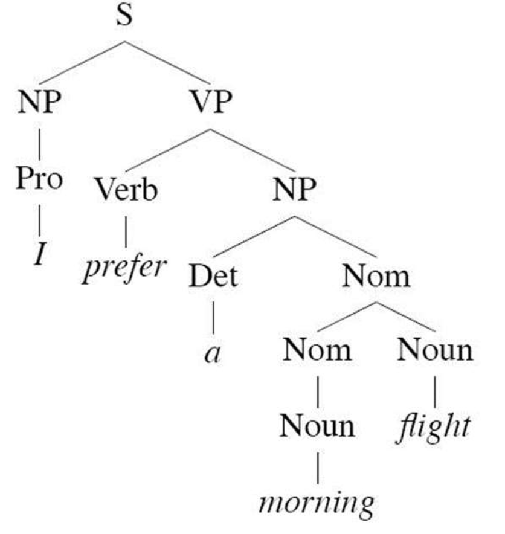
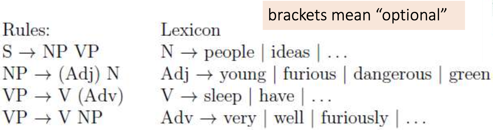
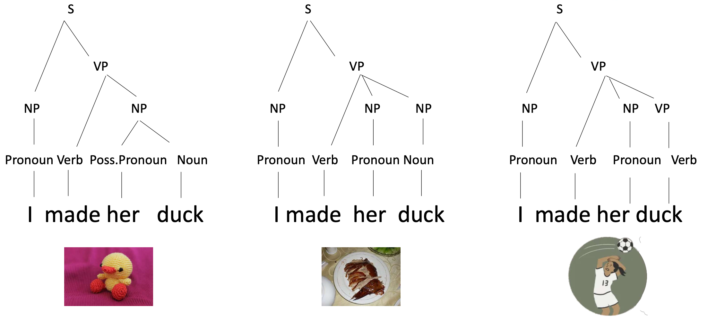

This is from Lecture 9 from my Natural Language Processing class at Twente.
Syntax concerns the internal structure of sentences (also called “grammar”)
Parsing is using a grammar to assign a syntactic structure (“parse tree”) to a phrase or sentence
Constituents (also knows as: phrases)
are groups of words that behave as a single unit.
The constituent can only be moved as a whole.
- The prime witness told the police a very long story at the bank
- At the bank the prime witness told the police a very long story
- The prime witness told the police at the bank a very long story
But not: At the the prime witness told the police a very long story bank
The constituent answers to questions
- Who told the story?
- It was the prime witness
- The prime witness
- The prime witness at the bank
- Where did he tell the story?
- At the bank
- The bank
- To whom did he tell the story?
- To the police
- The police
- What did he tell?
- The story
Conjuction: only between constituents of the same type
I ate a hamburger and a hot dog
I will eat the hamburger and throw away the hot dog
I ate a cold and well-burned hot dog
I ate a hamburger and well-burned * (incorrect grammar)
Heads
Heads are the most important, mandatory parts in a constituent.
- a very long story about the robbery
- the flights the airline was cancelling
- money
Phrases are named after the word class (part-of-speech) of their head.
Parts of speech (or word class)
I also covered them in this lecture.
| Word Class | part of speech |
| -------- | ------- |
| N or Noun | noun, singular, plural or mass |
| V or Verb | verb, past tense |
| P or Prep | preposition |
| Det | determiner |
| A or Adj | adjective |
Constituent Types
Phrases are named after the word class of their head:
- Noun phrase (NP): the prime witness
- Prepositional phrase (PP): at the bank
- Verb phrase (VP): told them a story
- Adjectival phrase (AP): prime, very long
Constituent types: NP
We can say that the following are all noun phrases in English:

Why?
- they can all precede verbs
- they all have a noun (or pronoun) as their head
Modifiers
Heads are mandatory parts in a constituent, modifiers are optional. A modifier “modifies” the meaning of the head. That is, it gives extra information about it. Leaving it out doesn’t damage grammaticality.
- a very long story about the robbery
- the flights the airline was cancelling
- money
Complements
Parts within a phrase that are required by the head are complements. Typical examples are the complements of the verb in a verb phrase (VP)
Transitive verbs have an NP as complement:
- The cat chases a dog / The cat chases
Intransitive verbs do not have a complement:
- The cat yawns / The cat yawns a dog*
Specifiers
NP: the (modifier) green (specifier) mat(head)
The specifier is to the left of the head. There is at most one specifier.
Context-Free Grammar (CFG)
A CFG for natural language models how constituents are built up and combined. Components: rules and lexicon.
G = <T, N, S, R>
- T is a set of terminals (the words in the lexicon = the leaves of the tree)
- N is a set of non-terminals (the nodes in the tree)
- S is the start symbol (one of the non-terminals)
- R is a set of rules (also called productions) of the form A → β, where
- A is a non-terminal
- β is a sequence of terminals and/or non-terminals
A grammar G defines a language L
Language L defined by a CFG: the set of all (and only) strings that can be derived from the start symbol S.
A derivation is a sequence of rules that can be expanded to form a certain string.

Parsing is the process of taking a string and a grammar and returning a parse tree (or multiple parse trees) for that string according to that grammar. More on that in Constituency Parsing
Example
Given the following grammar, which of the following sentences is ungrammatical?

-
People have dangerous ideas.
-
Young people sleep very well.
-
Green ideas sleep furiously.
-
Young people sleep furious people.
-
NP (“people”) + VP (“have” + NP “dangerous ideas”)
-
NP(“young people”) + VP( Verb “sleep” + Adv “very” + Adv “well”)
-
NP (“green ideas”) + VP (“sleep” + Adv “furiously”)
-
NP (“young people”) + VP (“sleep” + NP “furious people”) (odd semantically, but allowed syntactically)
Here, the second one is incorrect given the rules since VP V (Adv) allows for only one adverb.
